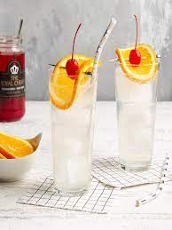

Tom Collins

This is a great warm weather cocktail with or without the splash of bitters.
Ingredients
- Ice
- 2 ouces gin
- 1 ounce lemon juice
- 1/2 ounce simple syrup
- Club soda or sparkling water
- 1 lemon round, for garnish
- 1 cocktail cherry
Steps
- Fill a cocktail shaker with ice. Pour in the gin, lemon juice and simple syrup.
Shake for 20 to 30 seconds, until the outside of the shaker is really cold.
- Fill a Collins (tall) glass with ice. Strain the contents of the shaker into the glass.
Fill the rest of the glass with club soda, and give it a gentle stir with a spoon.
- Garnish with a lemon round, plus a cocktail cherry. Enjoy.